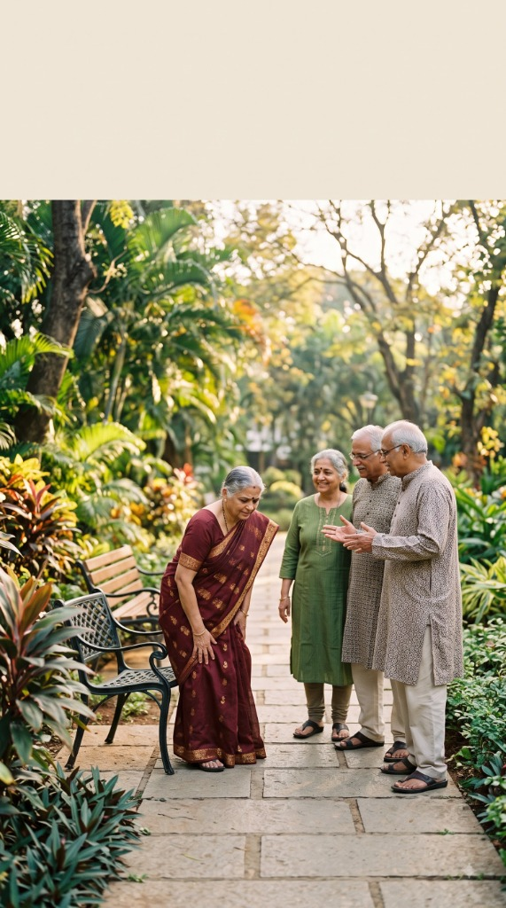

Severe Knee Osteoarthritis Relief
"I was limping and told knee replacement was imminent. After the Janu Basti treatment, I can walk comfortably and climb stairs without sharp pain."
Experience 20% to 30% pain relief in your very first session. A personalized, doctor-led protocol combining vital Marma point decompression and deep Ayurvedic Panchakarma to restore joint lubrication, spinal alignment, and pain-free mobility.

We do not push one-size-fits-all packages. Depending on your pain severity and readiness, our 60-second assessment matches you to strictly the single most appropriate pathway.
If you are just beginning to explore, hesitant, or want to understand how Ayurveda compares with surgery before visiting the clinic.
If you are at a fairly advanced stage and want a 45-minute clinical evaluation with Dr. Surabhi Vaidya to analyze your pulse (Naadi) and posture.
If you are in severe pain or looking to avoid advised knee/spine surgery. Experience 7 intensive therapies with 20% to 30% pain relief on Day 1.
Chronic joint and spinal pain does not just restrict movement; it robs you of your daily independence, sleep, and confidence.
Taking 15 to 20 painful minutes just to stand upright from bed, with audible clicking, crunching, or grating sounds in your knees.
Avoiding family gatherings, temple visits, or social events because climbing a single flight of stairs causes sharp, stabbing agony.
Excruciating electric shock-like sensations running from your lower lumbar spine down into your hips, thighs, calves, and toes.
Swallowing anti-inflammatories daily just to get through work, while worrying about dangerous long-term damage to your stomach and kidneys.
Take our 60-second clinical assessment to see if you are a candidate for non-surgical Marma & Panchakarma restoration.
We do not mask symptoms with numbing agents. We systematically decompress pinched nerves, lubricate dry cartilage, and restore tissue mobility.
Application of classical herbal decoctions and medicated oils cooked with anti-inflammatory roots (Mahanarayan and Ksheerabala) to nourish dry joint capsules.
Targeted thermal steam with medicinal herbs opens micro-circulatory channels (Srotas), dilates blood vessels, and eliminates accumulated metabolic toxins (Ama).
A specialized herbal dough ring holds warm medicated oil directly over the knee joint (Janu) or lumbar spine (Kati) for sustained deep cellular tissue penetration.
Classical Ayurvedic herb-mineral formulations (Yograj Guggulu, Shallaki, Hadjod) taken internally to rebuild bone density, reduce inflammation, and prevent relapse.

"In over 15 years of treating complex musculoskeletal disorders, I have observed that more than 70% of knee and back surgeries can be safely avoided if patients receive timely, authentic Ayurvedic Marma and Panchakarma therapies."
We believe in honest medicine. If you are in early to moderate stages of joint degeneration (Stages 1 to 3), we can help you prevent or delay surgery and walk pain-free. If a case has reached severe Stage 4 complete bone loss, we provide an honest surgical referral.
Watch authentic patient video stories and learn how Ayurvedic Marma therapy helped them regain pain-free mobility without surgery.
 Verified Recovery
Verified Recovery
"I was limping and told knee replacement was imminent. After the Janu Basti treatment, I can walk comfortably and climb stairs without sharp pain."
 Verified Recovery
Verified Recovery
"The shooting numbness down my left leg disappeared after the Kati Basti protocol. I have stopped taking daily painkillers entirely."
 Verified Recovery
Verified Recovery
"Morning stiffness used to paralyze my first hour. The 1-Day Trial gave me 25% instant ease, and the full protocol gave me my life back."
 Verified Recovery
Verified Recovery
"My doctor had recommended surgery. Dr. Surabhi's natural Marma protocol helped me walk and travel pain-free again."
 Verified Recovery
Verified Recovery
"I could not sit or bend without severe spasms. The bio-reservoir oil therapy helped decompress my spinal nerves."
 Verified Recovery
Verified Recovery
"Remarkable difference in joint flexibility and knee strength in just 10 days without steroid injections."
No hidden charges, no sudden surprise bills. Choose the treatment level that suits your clinical need and comfort.
Everything you need to know about our treatments, timeline, and results.
Most patients experience a 20% to 30% reduction in pain intensity and noticeable easing of stiffness within their very first session. For lasting structural correction, our complete 7-day or 21-day protocols provide lasting joint regeneration.
For Stage 1, 2, and 3 Knee Osteoarthritis, Lumbar Spondylosis, and Sciatic nerve compression, clinical Marma and Panchakarma therapies have helped thousands avoid surgical intervention. During your consultation, Dr. Surabhi Vaidya will review your X-Rays or MRI to give you an honest appraisal.
Once you register for the ₹201 Live Masterclass, you will receive the Zoom access link and calendar invitation via SMS. You can join directly from your smartphone or computer.
Yes, 100%. All internal herbal medicines are standardized, heavy-metal tested, and customized specifically according to your medical history and co-morbidities.
Our clinic is located at Shop No 5, Panchsheel Shopping Centre, Near Hari Om Dhaba, Gladys Alwares Road, Thane West 400610. The clinic is easily accessible from Ghodbunder Road, Majiwada, and Thane Station.
Get your customized non-surgical treatment plan in less than 60 seconds.